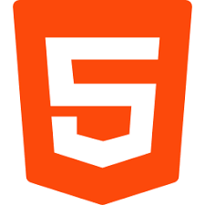

Muito Feliz em realizar o meu primeiro site em HTML e colocar a basi daquilo que eu venho aprendendo até o momento.

Podemos também carregar imagens que estão em sub-pastas.

Também podemos carregar imagens externas
num = int(input('Digite um número'))
if num % 2 == 0:
print(f'O número {num} é PAR')
else:
print(f'O número {num} é IMPAR')
print('Fim do programa')
Deus criou o céus e a terra
Escrito na Bíblia
Esteja conectado com as coisas de Deus.
Hoje em dia as pessoas usam muitas abrevições como; vc, tbm, vdd, sdds.
Acesse aqui a segunda página.